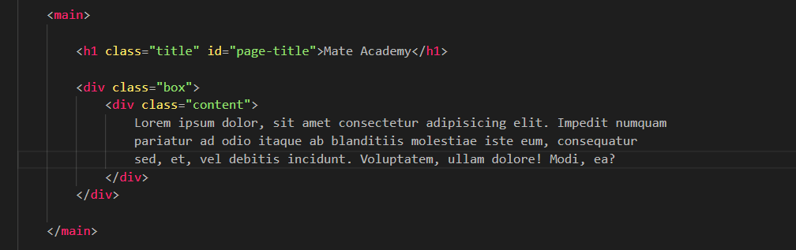
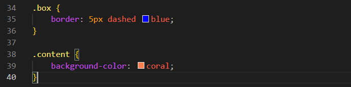

Overflow
Intro
Aqui iremos entender oque ocorre quando um conteudo excede o tamanho de nosso container.
Aqui iremos entender oque ocorre quando um conteudo excede o tamanho de nosso container.
HTML:

CSS:

Com esse codigo de exemplo, se no caso desejarmos adicionar mais conteudo em nosso texto podemos observar que ele ira ir se adaptando, porem se adicionarmos uma width e height fixas. E tambem deixarmos a tag filha maior que a width e height pai.
Poderemos observar um overflow.
O overflow acontece quando o conteúdo de um elemento ultrapassa os limites do elemento pai.
Com ele conseguimos ocultar a parte do conteudo que ultrapassou os limites do elemento pai. Porem ainda ocorrera um problema, onde o usuario nao conseguira visualizar o conteudo que estara oculto.
Basicamente com ele conseguimos cortar a parte que ultrapassa os limites do elemento pai, porem ao inves de ocultar, conseguimos visualizar seu conteudo atraves do scroll.
Porem ainda teremos um problema, onde mesmo que o conteudo acabe sendo menor, pode acabar havendo barra de rolagem scroll.
Melhor opcao pois se adapta de acordo com a necessidade se conteudo ultrapassar os limites, havera uma barra de rolagem.
Conteudo da aula